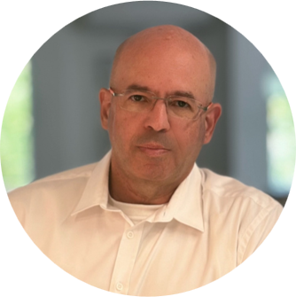
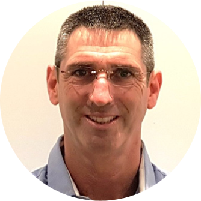
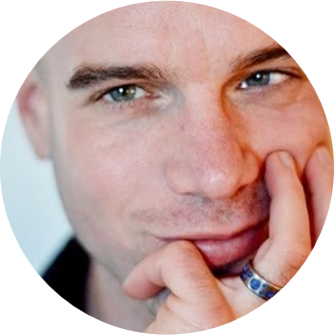
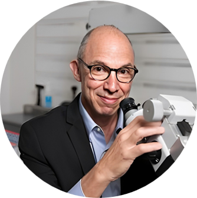
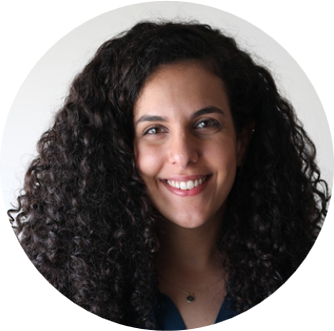
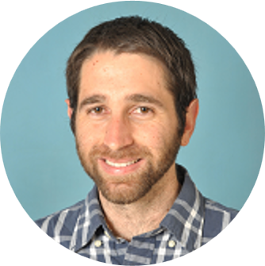
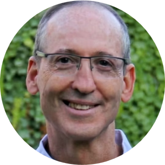

CEO
Ohad brings over two decades of leadership experience to the medical device sector, specializing in the development of complex multidisciplinary products. A former CEO and entrepreneur, he has led multiple ventures, including public companies in Israel and the United States. His background features a strong track record in capital raising and public offerings, as well as comprehensive management of QA/RA, clinical operations, R&D, and commercial strategy.

CTO
Udi is a Mechanical Engineer with over 25 years of experience directing multidisciplinary product development within the medical device industry. He has held Project Management roles across a diverse range of companies, spanning from early-stage startups to established corporations. Udi possesses extensive expertise in leading the full product lifecycle—from initial concept to final product—with a specialized focus on R&D, Quality & Regulatory affairs (QA/RA), clinical trials, and the transition from development to production.

Neuroscientist & Advisor
Boaz is a neuroscientist with a strong research background from the Tel Aviv Medical Center and UC Berkeley in the U.S., specializing in EEG technologies. With over a decade of experience, he has served as a researcher, algorithm developer, and Neuroscience Lead for various neurology-focused biotech companies.

Co-founder and Medical Director
Ari is a specialist in Otolaryngology and Director of the Pediatric Otolaryngology Unit at Dana Children’s Hospital, Tel Aviv Medical Center. An Associate Professor at the Faculty of Medicine, he brings extensive experience in clinical research.

Co-founder & Medical Advisor
Linor is an Otolaryngologist and Software Engineer. A graduate of the Tel Aviv University School of Medicine, she holds a B.Sc. in Computer Science (Cum Laude) and a B.Sc. in Medical Sciences. She possesses extensive experience in clinical research, spanning from protocol design and Helsinki Committee submissions to the full execution of patient trials. Additionally, she brings over a decade of expertise in the architecture, design, and development of Real-Time/Embedded software and communications systems, backed by research experience in bioinformatics."

Co-founder & Medical Advisor
Tal is a physician and researcher holding a B.Sc. in Neuroscience (Cum Laude). He possesses extensive research experience spanning electrophysiology, bioinformatics, and clinical studies.

Co-founder and Scientific Director
Professor at the Department of Biomedical Engineering at Tel Aviv University, Mickey brings extensive experience in the field of medical innovation.